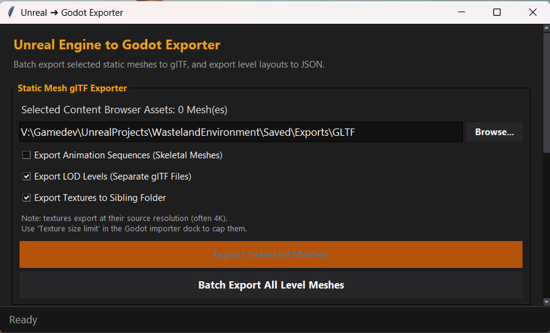
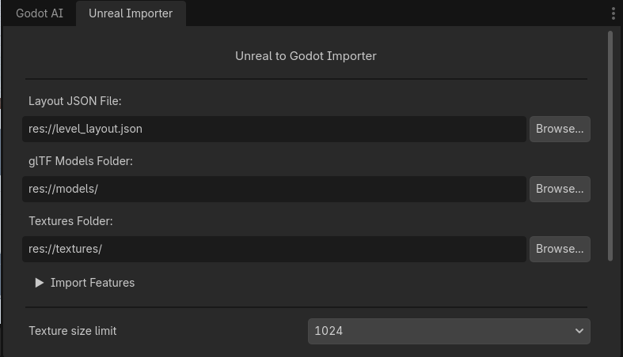

Your Unreal asset packs in Godot. Collision and materials intact. One click.
Migrate 3D environment and prop packs from Unreal Engine 5 directly into Godot 4 — with PBR materials, collision primitives, foliage, lights, and level transforms intact. Moves art, not behavior.
What it moves
A precise, automated pipeline engineered for high-fidelity 3D environment and prop pack migration.
Meshes
Batch exports static and skeletal meshes to glTF with collision-safe asset naming to resolve name collisions across multi-pack libraries.
Collision Primitives
Extracts Unreal box, sphere, capsule, and convex hull primitives into native Godot CollisionShape3D nodes.
PBR Materials & Textures
Maps albedo, roughness, metallic, normal maps, and UV tiling parameters with case-insensitive texture resolution.
Level Layout
Converts left-handed Z-up centimeter transforms to Godot right-handed Y-up meter transforms. Supports multi-component Blueprints.
Lights & Post-Process
Translates directional, point, spot, and rect lights alongside sky, fog, bloom, SSAO, and exposure settings into Godot environment nodes.
Decals
Exports DeferredDecal actors into Godot Decal nodes with matching extent dimensions, textures, and sorting priority.
Foliage as MultiMesh
Packs painted foliage, HISM, and ISM instances into efficient Godot transform arrays to preserve runtime render performance.
Navigation Volumes
Converts NavMeshBoundsVolume actors to NavigationRegion3D nodes with matching agent parameters and optional import baking.
Honest scope
UnrealToGodot moves art and scene layout, not gameplay engine logic. We explicitly define what converts so you know exactly what to expect.
- ✓ Static & Skeletal Meshes exported to glTF, with optional LOD levels and collision-safe naming across multi-pack libraries.
- ✓ Collision Primitives (Box, Sphere, Capsule, Convex Hulls) attached to StaticBody3D.
- ✓ PBR Material Parameters (Albedo, Normal, Roughness, Metallic, AO, UV scaling) rebuilt as Godot materials. Parameter-level — custom shader graphs need re-authoring.
- ✓ Level Layout & Hierarchy including Blueprint actor static mesh compositions.
- ✓ Lighting & Environment (Directional, Point, Spot, Rect lights, Fog, Sky, SSAO).
- ✓ Foliage & Decals packed into MultiMeshInstance3D and Decal nodes.
- ✕ Blueprint Event Graphs & Logic — engine scripting is not converted; rebuild in GDScript.
- ✕ Gameplay Systems & Frameworks — Character controllers, game modes, and AI logic.
- ✕ Niagara & Cascade Particle Systems — particle graphs require re-authoring in Godot GPU Particles.
- ✕ Audio & Sound Cues — ambient sound actors, attenuation settings, and sound banks.
- ✕ AnimBlueprints & State Machines — animation sequences export via glTF, but state logic does not.
How it works
Three clear steps to migrate your scene layout and assets from Unreal Engine to Godot 4.
Export from Unreal
Open the Python GUI under Window > Unreal to Godot Exporter in UE5. Select your features and click Export Everything.

Point Godot Importer Dock
In Godot 4, open the Unreal to Godot Importer dock tab. Select the exported layout JSON and mesh asset folders.

Import & Rebuild
Click Import Unreal Level Layout to populate your active 3D scene (or use direct .tscn scene generation from Unreal).
It grades its own output
Both exporter and importer audit their operations in writing. Problems like missing textures, oversized 4K assets, or broken mesh paths are caught automatically in plain-text audit logs.
Requirements & environment
Tested engine versions and prerequisite plugin configurations.
Tested on Unreal Engine 5.7. Requires built-in plugins: Python Editor Script, Editor Scripting Utilities, and glTF Exporter.
Godot 4.4+ is required for .uid resource sidecar compatibility. Tested on Godot 4.6.3.
Exports terrain heightmaps/splatmaps as float EXRs. Landscapes effectively require the Terrain3D plugin — the plugin-free mesh fallback caps out at a 256×256 grid and is a preview, not a shippable result. Terrain is the least mature part of the toolchain.